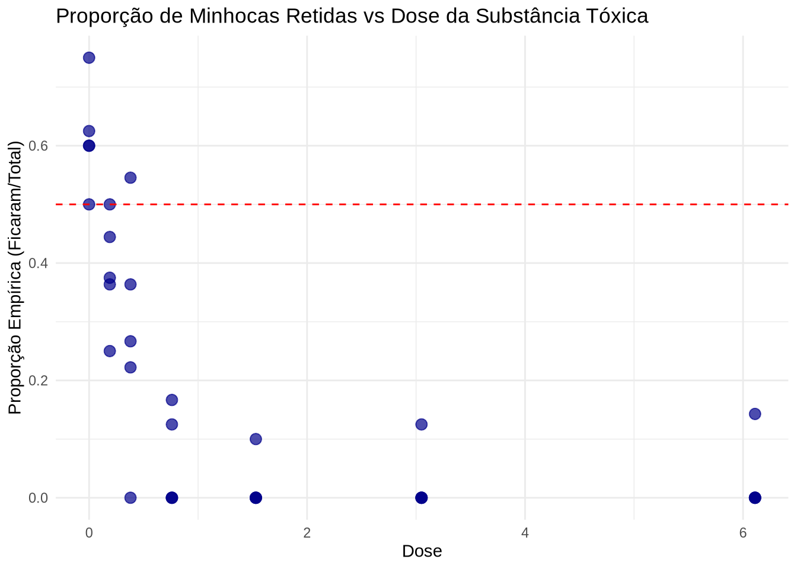
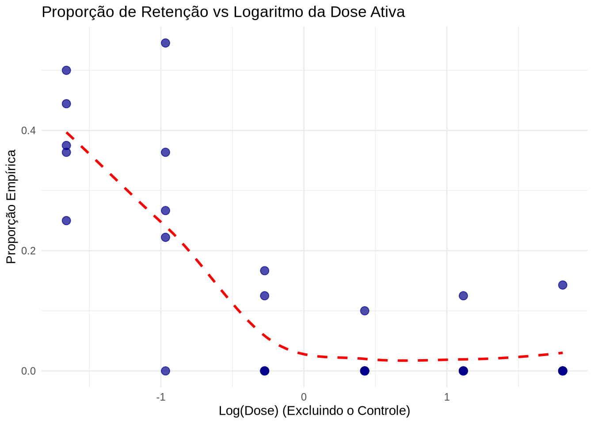

library(tidyverse)
library(MASS)
library(faraway)
library(drc)
library(ggplot2)
library(dplyr)
library(DHARMa)
library(easystats)
library(knitr)
data(earthworms)
dados <- earthwormsModelo de Dose-Resposta
1 Introdução
Contextualização do problema, descrição da origem do conjunto de dados escolhido e a justificativa teórica inicial para a aplicação do modelo designado.
A ecotoxicologia depende fortemente de ensaios de dose e resposta para compreender o impacto de substâncias químicas em organismos vivos. Nesses experimentos, busca-se quantificar como a variação na dose (ou concentração) de um estressor químico influencia uma resposta biológica de interesse. Um indicador comportamental comum para avaliar o estresse ambiental em ecossistemas terrestres é a taxa de migração ou fuga de espécies bioindicadoras, como as microcas, quando expostas a solos contaminados.
1.1 Descrição e Origem do Conjunto de Dados
Este trabalho utiliza o conjunto de dados empíricos earthworms, disponibilizado no pacote drc do ambiente computacional R. Os dados originalmente fornecidos por Nina Cedergree (Universidade de Copenhague), consistem em 35 observações provenientes de um teste de toxicidade. O experimento documenta o número de minhocas que permaneceram em um recipente contaminado com doses variadas de uma substância tóxica não revelada, ou seja, a quantidade de indivíduos que falhou em migrar para um recipiente vizinho limpo e não contaminado.
1.2 Justificativa
Como o fenômeno estudado avalia a ação individual das minhocas (migrar ou não), mas os dados disponíveis registram a proporção desse comportamento por amostra (o número de indivpiduos que permaneceram no solo contaminado em relação ao total exposto a cada dose), trata-se de uma variável resposta de dados agrupados. Essa estrutura empírica motiva a aplicação da teoria de MLG sob a suposição de uma distribuição binomial, oque permite modelar adequadamente a probabilidade de um indivíduo permanecer no recipiente contaminado em função da dose recebida.
2 Metodologia
Detalhamento do tamanho amostral, definição clara da variável resposta e preditores, além da formulação matemática do modelo (função de ligação e componente de variância).
A amostra do estudo consiste em 35 observações empíricas. A variável resposta é a proporção de microcas retidas no solo contaminado em cada ensaio, estruturada e modelada como dados agrupados sob a suposição de uma distribuição binomial, \(Y_i \sim Binomial(n_i, p_i)\). A proporção média esperada é \(E(Y_i/n_i) = p_i\), assumindo a componente de variância teórica \(Var(Y_i/n_i) = \frac{p_i(1 - p_i)}{n_i}\).
Para conectar a probabilidade \(p_i\) ao preditor linear \(\eta_i\), serão ajustadas e comparadas três funções de ligação para dados binomiais:
- Logito: \(\eta_i = \log\left(\frac{p_i}{1-p_i}\right)\)
- Probito: \(\eta_i = \Phi^1_{(p_i)}\)
- Compementro Log-Log (Cloglog): \(\eta_i = \log(-\log(1 - p_i))\)
Em relação aos preditores, a componente sistemática exige atenção especial à dose zero (grupo controle). Como log(0) é matematicamente indefinido e o comportamento natural sem toxina resulta em uma divisão aproximada de metade das minhocas entre os recipientes, não é apropriado ajustar uma regressão ondinária usando apenas log(dose). Para contornar isso os preditores foram formulados em segmentos (piewise) com variáveis indicadoras (dummy), isolando o efeito do controle das doses ativas:
\[ \eta_i = \beta_0 + \beta_1I_{\text{controle}} + \beta_2\log(\text{Dose}_{\text{ativa}})\]
A estimação dos parâmetros será feita pelo método da Máxima Verossimilhança. O melhor modelo será selecionado com base no menor Críterio de Informação de Akaike (AIC). Para o diagnóstico do ajuste, aplicaremos o Teste Qui-Quadrado no Desvio Residual e a inspeção gráfica de pressupostos utilizando resíduos quantílicos randomizados.
3 Análise Descritiva
Exploração visual inicial das variáveis explicativas e comportamento empírico da resposta.
ggplot(earthworms, aes(x = dose, y = number/total)) +
geom_point(color = "darkblue", size = 3, alpha = 0.7) +
theme_minimal() +
labs(
title = "Proporção de Minhocas Retidas vs Dose da Substância Tóxica",
x = "Dose",
y = "Proporção Empírica (Ficaram/Total)"
) +
geom_hline(yintercept = 0.5, linetype = "dashed", color = "red")
Na gráfico podemos observar que na dose zero (controle) cerca da metadade das minhocas naturalmente permanece no recipinete. A queda abrupta com o aumento da dose comprava que uma simples transoformação logarístmica direta da covariável é inadequada, reforçando a necessidade de isolar o grupo controle na modelagem.
earthworms |>
filter(dose > 0) |>
ggplot(aes(x = log(dose), y = number/total)) +
geom_point(color = "darkblue", size = 3, alpha = 0.7) +
geom_smooth(method = "loess", se = FALSE, color = "red", linetype = "dashed") +
theme_minimal() +
labs(
title = "Proporção de Retenção vs Logaritmo da Dose Ativa",
x = "Log(Dose) (Excluindo o Controle)",
y = "Proporção Empírica"
)`geom_smooth()` using formula = 'y ~ x'
Excluindo-se o controle e plotando a resposta contra o logaritmo das doses ativas, observamos uma forma sigmoide descrescente. Esse padrão justifica o uso do logaritmo da dose como variável explicativa para as doses ativas.
earthworms |>
filter(dose > 0) |>
mutate(elogit = log((number + 0.5) / (total - number + 0.5))) %>%
ggplot(aes(x = log(dose), y = elogit)) +
geom_point(color = "darkblue", size = 3, alpha = 0.7) +
geom_smooth(method = "lm", se = FALSE, color = "red") +
theme_minimal() +
labs(
title = "Logitos Empíricos vs Log(Dose)",
x = "Log(Dose) (Excluindo o Controle)",
y = "Logito Empírico"
)`geom_smooth()` using formula = 'y ~ x'
O uso de logitos empíricos platados contra o logaritmo da dose mostra uma notável tendência linear. A obtenção dessa linearidade é o diagnóstico visual perfeito de que a função de ligação logistica (Logito) está corretamente especificada para a componente sistemática do modelo.
4 Ajuste e Diagnóstico do Modelo
Apresentação das estimativas, avaliação de qualidade global do ajuste, análise de resíduos (homocedasticidade, pontos influentes) e testes específicos para cada modelo.
Para a seleção dos modelos, será apresentado o processo de ajuste, seleção e validação dos Modelos Lineares Generalizados (MLG) aplicados aos dados de dose-resposta com minhocas. Primeiramente, serão ajustados e comparados diferentes modelos, abordando as funções de ligação logito e complemento log-log (cloglog), e devido à natureza dos dados, algumas alterações nestes modelos para validade matemática. Essa escolha e comparação dos modelos tem como base critérios de qualidade global e ajuste, especificamente o Critério de Informação de Akaike (AIC), o Desvio (Deviance), o Pseudo-\(R^2\) de McFadden, a Raiz do Erro Quadrático Médio (RMSE) e a métrica DE50.
Inicialmente, iremos ajustar os seguintes cinco modelos.
mod_cloglog <- glm(cbind(number, total - number) ~ dose,
family = binomial(link = "cloglog"), data = earthworms)
modelo_logit1 <- glm(cbind(number, total - number) ~ log(dose + 1), data = earthworms, family = binomial(link = "logit"))
modelo_logit2 <- glm(cbind(number, total - number) ~ log(dose + 0.1), data = earthworms, family = binomial(link = "logit"))
mod_logit <- glm(cbind(number, total - number) ~ dose,
family = binomial(link = "logit"), data = earthworms)
dados$controle <- ifelse(dados$dose == 0, 1, 0)
dados$log_dose <- ifelse(dados$dose > 0, log(dados$dose), 0)
mod_glm_dummy <- glm(cbind(number, total - number) ~ controle + log_dose,
data = dados,
family = binomial(link = "logit"))Que são, respectivamente:
Modelo Linear Generalizado Binomial com Ligação Complemento Log-Log;
Modelo Linear Generalizado Binomial com Ligação Logito e variável resposta modificada (log + 1);
Modelo Linear Generalizado Binomial com Ligação Logito e variável resposta modificada (log + 0.1);
Modelo Linear Generalizado Binomial com Ligação Logito padrão;
Modelo Linear Generalizado Binomial com Ligação Logito e variáveis resposta modificadas (adição de variável e modificação);
As variáveis resposta foram modificadas para o logarítmo da dose pois, na biologia, a resposta de um organismo à uma substância quase nunca é linear, o efeito costuma ser em magnetudes (escala logarítmica).
Portanto, se for usado a dose normalmente, o modelo vai dar um peso maior para as doses mais altas, ignorando o que acontece nas doses mais baixas. O log resolve isso espalhando as doses menores e aproximando as maiores, sendo o ideal para o ajuste logistico.
Entretanto, apenas aplicar o logarítimo não seria o suficiente pois, nesta variável explicativa, há a presença de zeros, para contornar isso, foi-se adicionado uma constante ao valor da variável, para um caso foi usado o log(dose + 1) e então para minimizar a contribuição da constante foi-se usado o log(dose + 0.1), entretanto, essa abordagem gera uma distorção na escala das doses, afetando possíveis estimativas e o cálculo de métricas como a DE50.
Dessa forma, também para contornar este problema foi-se ajustado um modelo com a adição de uma variável “dummy”, isto é, a variável indica se o valor da dose é zero, se for, não aplica o logarítimo, se não for, aplica o logarítimo, ao mesmo tempo evitando que seja feito log(0) e aplicando o logarítimo importante para o modelo.
Com os modelos definidos, podemos seguir para a comparação e seleção deles.
4.1 Comparação dos modelos
Iremos utilizar 4 critérios para selecionar o modelo ideal:
Critério de Informação de Akaike (AIC): quanto menor, melhor;
Desvio (Deviance): quanto menor, melhor;
Pseudo-\(R^2\) de McFadden: quanto maior, melhor;
Raiz do Erro Quadrático Médio (RMSE): quanto menor, melhor.
Além destes, há também uma métrica que pode servir como critério, sendo ele a dose efetiva mediana (DE50), neste, iremos observar se o valor é condizente com o contexto, nesse caso, qualquer modelo que apresentar em seu intervalo de confiança valores negativos pode ser considerado inconsistente e descartado, a incosistência vem de que não existe dose negativa, portanto valores negativos de dose efetiva mediana são inconsistentes.
Com isso definido, iniciaremos pela comparação dos AICs:
AIC(mod_cloglog, modelo_logit1, modelo_logit2, mod_logit, mod_glm_dummy) df AIC
mod_cloglog 2 91.81223
modelo_logit1 2 80.56107
modelo_logit2 2 77.91139
mod_logit 2 94.19802
mod_glm_dummy 3 78.33592Para o AIC percebe-se que o modelo logito padrão, complemento log-log e o modelo logito deslocado à 1 unidade apresentam os maiores AICs, o que não é ideal, já aqui pode-se descartar os modelos logito padrão e logito deslocado à 1 unidade, o modelo complemento log-log apesar de apresentar um AIC alto comparado aos outros não será descartado a fins de comparação de ligações posteriores.
df_deviance <- data.frame(
Modelo = c("Complemento Log-Log", "Logito com log(dose + 0.1)", "Logito com dummy"),
Desvio = c(deviance(mod_cloglog), deviance(modelo_logit2), deviance(mod_glm_dummy)))
kableExtra::kable(df_deviance,
booktabs = TRUE,
digits = 4,
col.names = c("Modelo", "Desvio Residual"),
caption = "Comparação da Desvio Residual entre os modelos")| Modelo | Desvio Residual |
|---|---|
| Complemento Log-Log | 44.0193 |
| Logito com log(dose + 0.1) | 30.1185 |
| Logito com dummy | 28.5430 |
Para a comparação dos desvios dos modelos restantes percebe-se novamente que o modelo complemento log-log apresenta as piores métricas, tendo o maior desvio com uma diferença considerável, enquanto os modelos logito restantes tem uma diferença mínima entre eles.
r2_mcfadden_cloglog <- 1 - (summary(mod_cloglog)$deviance / summary(mod_glm_dummy)$null.deviance)
r2_mcfadden_logit2 <- 1 - (summary(modelo_logit2)$deviance / summary(modelo_logit2)$null.deviance)
r2_mcfadden_glm_dummy <- 1 - (summary(mod_glm_dummy)$deviance / summary(modelo_logit2)$null.deviance)
df_r2 <- data.frame(
Modelo = c("Complemento Log-Log", "Logito com log(dose + 0.1)", "Logito com dummy"),
`R2 de McFadden` = c(r2_mcfadden_cloglog, r2_mcfadden_logit2, r2_mcfadden_glm_dummy),
check.names = FALSE
)
kable(df_r2,
booktabs = TRUE,
digits = 4,
caption = "Pseudo-R2 de McFadden para cada modelo ajustado")| Modelo | R2 de McFadden |
|---|---|
| Complemento Log-Log | 0.5474 |
| Logito com log(dose + 0.1) | 0.6903 |
| Logito com dummy | 0.7065 |
No pseudo-\(R^2\) temos mais uma vez uma diferença grande entre o complemento log-log e os logitos, enquanto os logitos, entre si, tem uma diferença marginal. Além disso, no geral podemos afirmar que para qualquer um dos modelos, temos valores ótimos de R², evidenciando a qualidade dos modelos.
df_rmse <- data.frame(
Modelo = c("Complemento Log-Log", "Logito com log(dose + 0.1)", "Logito com dummy"),
RMSE = c(performance::rmse(mod_cloglog), performance::rmse(modelo_logit2), performance::rmse(mod_glm_dummy))
)
kable(df_rmse,
booktabs = TRUE,
digits = 4,
col.names = c("Modelo", "RMSE"),
caption = "Raiz do Erro Quadrático Médio (RMSE) dos modelos")| Modelo | RMSE |
|---|---|
| Complemento Log-Log | 0.1238 |
| Logito com log(dose + 0.1) | 0.1008 |
| Logito com dummy | 0.0968 |
Já na Raiz do Erro Quadrático Médio (RMSE) temos diferenças marginais entre os modelos, no geral temos boas Raízes, mantendo seus valores bem baixos.
5 Interpretação Estatística e Conclusão
Leitura interpretativa dos coeficientes na escala prática do problema (razões de taxas, percentuais, curvas de resposta) e considerações finais sobre o fenômeno estudado.